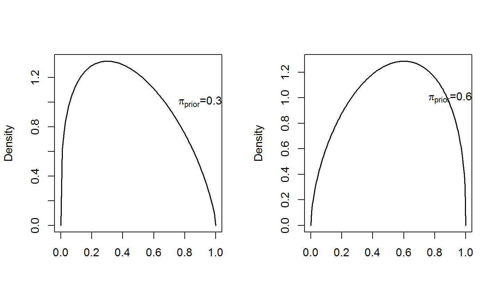
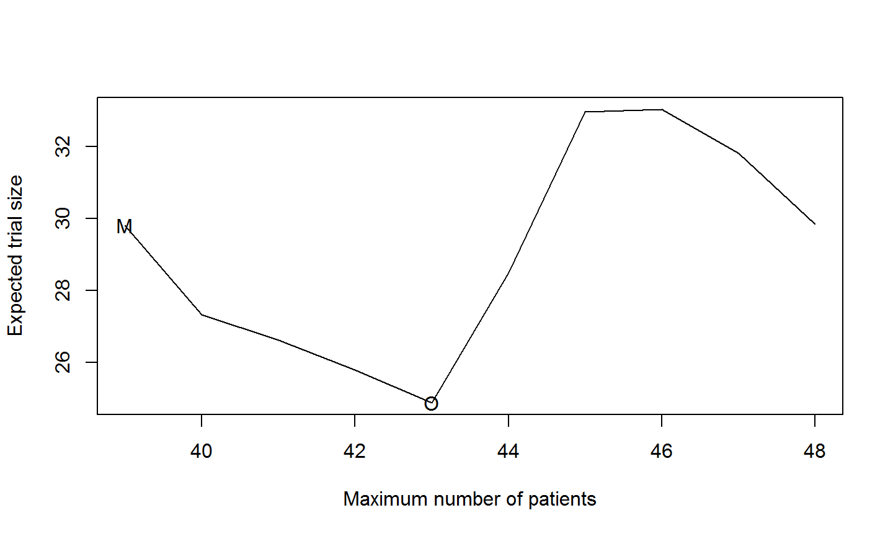

- Features: early trial in patients
- Purpose:
- dose ranging
- adverse events
- pathophysiology
- limited efficacy data
- Design:
- single-stage
- multi-stage (Simon's optimal and minimax design)
Phase II clinical trials
Two-stage design
- A small group of patients are enrolled in the first stage
- The enrollment of another group of patients in stage 2 is conditional on the outcome of the first group
- activating the second stage depends on an adequate number of responses observed from the first stage
Rationale: to not enroll a large group of patients (as in conventional one-stage designs) whether not sure if the new treatment is effective
Two-stage design
A phase II trial is an uncontrolle trial (tipically one-arm, open-label) to obtain an estimate of the degree of a new treatment (agent) effect
- The aim is to see if the new agent has sufficient activity against a specific target (i.e, type of tumor, etc.) to warrant its further development
- to combine with other drugs in a phase III trial comparing survival results with a standard treatment
Single Threshold Design (STD)
- \(R_U\): target response
- \(\pi_{prior}\): anticipated response rate
- \(\lambda_1\) and \(\lambda_2\): threshold probabilities (at the interim stage and at the end of the trial) that the true response rate \(\pi\) exceeds \(R_U\)
Let the primary endpoint be a dichotomous variable \(X\) (e.g \(X\sim Bin(n,\pi)\)):
-\(\pi\) represents the probability of success, for which a conjugate prior Beta distribution is chosen: \(\pi\sim Beta(\alpha, \beta)\)
Bayesian sample sizing as pre-posterior analysis
- \(R_U\): target response
- \(\lambda\): minimum desired threshold probability that the true response rate \(\pi\) exceeds \(R_U\)
Suppose \(X\) is specified from the target response plus some small value (e.g. 0.05): \[X=(R_U+0.05)\times n\]
The posterior probability \(P[(\pi|X,\alpha, \beta)>R_U]\) is computed:
- if it exceeds \(\lambda \Longrightarrow n\) is the chosen sample size
- if it does not exceeds \(\lambda \Longrightarrow\) the posterior calculation is repeated for \(n+1\) and continue until \(\lambda\) is exceeded.
Two-stage design
- \(n\) patients are recruited to stage 1
- possibily further \(N-n\) patients are recruited to stage 2
Practical constraints: There is often practical lower and upper limits to the total study size N:
- designs with stage 1 fewer than 5 patients are unlikely to be adopted
- 2 stage designs with N larger than 100 are unlikely to be adopted
- typically total sample size \(N\) lies between 10 and 90
Two-stage design
Suppose \(X_1\) and \(X_2\) represent the hypothetical data that would arise from the trial (they are specified from the target response \(R_U\) plus some small value \(\epsilon_U\in(0,0.1)\) (e.g. 0.05)
We are searching for:
- the smallest N for which \(P(\pi > R_U|X_1,X_2)>\lambda_2\)
- at the same time, the smallest stage 1 sample size \(n\) such that: \(P(\pi > R_U|X_1)>\lambda_1\)
Computational algorithms
Tan&Machin used a \(Beta(\alpha,\beta)\) vague prior distribution for \(\pi\), where \[ \alpha = \pi_{prior} +1, \qquad \beta = (1-\pi_{prior})+1 \]

Computational algorithms
- Specify \(R_U, \pi_{prior}, \lambda_1\) and \(\lambda_2\); \(\epsilon_U = 0.05\)
- Set the overall number of successes as \(X=(R_U+\epsilon_U)\times N\), starting from \(N=10\) \(\Longrightarrow X \sim Binomial(N, R_U+\epsilon_U)\)
- Set the prior \(\pi\sim Beta(\pi_{prior}+1; (1-\pi_{prior})+1)\)
Compute the posterior \[ \pi\vert X_1,X_2,\alpha, \beta = Beta(\alpha';\beta') \] where
- \(\alpha' = \pi_{prior}+1+(R_U+\epsilon_U)\times N\)
\(\beta' = 1-\pi_{prior}+1+N-(R_U+\epsilon_U)\times N\)
Priors
Different ways to build prior distribution \(Beta(\alpha,\beta)\) for \(\pi\):
- Building priors solely on the prior parameters and interpreting \(\alpha + \beta\) as the total number of subjects (Gelman):
- \(\alpha\) successes and \(\beta\) failures
- Using 90th percent probability interval \(W_{90} = (5th, 95th)\)-percentiles and elicit information from investigators or past studies through the percentile approach
Informative and non-informative priors
- Informative priors are narrow and reflect the knowledge of strong prior information
- Non-informative priors are flat and reflect little prior information
Prior elicitation
Two steps for eliciting a-priori distribution
- eliciting the center value by asking the clinician "what is the most likely response reate you expect to occur?"
- finding out whether the response is the mean, median or the mode
- assessing the uncertainty in the "most likely response rate"
- elicitation of \(W_{90}\) is easy for clinicians who think in terms of percentiles
- \(W_{90}\) can be elicited by asking clinicians how uncertain they are regarding their center value
- for mode answer, the question can be posed as "prior sample size" (increasing or decreasing \(\alpha + \beta\))
How to build priors
mode (non-informative):
- it has prior parameters \(\alpha = \pi_{prior}+1\) and \(\beta = 1-\pi_{prior}+1\)
- it has the interpretation of a mode and a prior sample size of \(\alpha+\beta=3\)
mode (informative):
- it has prior parameters \(\alpha = \pi_{prior}+1+n_{prior}\pi_{prior}\) and \(\beta = 1-\pi_{prior}+1+n_{prior}(1-\pi_{prior})\)
- it has the interpretation of a mode and a prior sample size of \(\alpha+\beta=n_{prior}+3\)
How to build priors
median (informative):
- we elicit \(\pi_{prior}\) assuming it is the median and we elicit also \(W_{90}\)
- this requires solving the system:
\[ F(\pi_{prior}\vert\alpha\beta) =0.5 \\ F^{-1}(0.95\vert\alpha\beta) -F^{-1}(0.05\vert\alpha\beta) = W_{90} \]
mean (informative):
- we elicit \(\pi_{prior}\) assuming it is the mean and we elicit also \(W_{90}\)
- this requires solving the system:
\[ E(y)=\pi_{prior} \\ F^{-1}(0.95\vert\alpha\beta) -F^{-1}(0.05\vert\alpha\beta) = W_{90} \]
Sample size calculation
source('R\\singleThresholdDesign.R')
source('R\\informativePriors.R')
sample size calcultion using the non-informative mode prior:
\(R_U=0.2\), \(\pi_{prior}=R_U+0.05\) and \(\lambda=0.8\)
stage2(ru = 0.2, pi = 0.2 + 0.05, lambda = 0.8)
## $N ## [1] 32 ## ## $posterior ## [1] 0.8023008
Sample size calculation
Sample size calculation using the informative mode prior with \(n_{prior}=10\):
\(R_U=0.2\), \(\pi_{prior}=R_U+0.05\), \(W_{90}=0.3\) and \(\lambda=0.8\)
pparameter(pi=0.2+0.05, w90=0.3, prior.method='mode-informative')
## $alpha ## [1] 3.75 ## ## $beta ## [1] 9.25
stage2(ru=0.2, pi=0.2+0.05, lambda=0.8, alpha = 3.75, beta = 9.25)
## $N ## [1] 22 ## ## $posterior ## [1] 0.8023008
Sample size calculation
Sample size calculation using the informative median prior:
\(R_U=0.2\), \(\pi_{prior}=R_U+0.05\), \(W_{90}=0.3\) and \(\lambda=0.8\)
pparameter(pi=0.2+0.05, w90=0.3, prior.method='median-informative')
## $alpha ## [1] 5.613544 ## ## $beta ## [1] 16.1849
stage2(ru=0.2, pi=0.2+0.05, lambda=0.8, alpha = 5.61, beta = 16.19)
## $N ## [1] 27 ## ## $posterior ## [1] 0.8005037
Sample size calculation
Sample size calculation using the informative mean prior:
\(R_U=0.2\), \(\pi_{prior}=R_U+0.05\), \(W_{90}=0.3\) and \(\lambda=0.8\)
pparameter(pi=0.2+0.05, w90=0.3, prior.method='mean-informative')
## $alpha ## [1] 5.331685 ## ## $beta ## [1] 15.99505
stage2(ru=0.2, pi=0.2+0.05, lambda=0.8, alpha = 5.33, beta = 16)
## $N ## [1] 34 ## ## $posterior ## [1] 0.80136
Pessimistic and optimistic sample size calculations
Using the routines provided, try to find the sample size for different values of \(R_U\) according to these definitions of:
- very optimistic prior: \(\pi_{prior} = R_U + 0.05\)
- optimistic prior: \(\pi_{prior} = R_U\)
- pessimistic prior: \(\pi_{prior} = R_U -0.2\)
Fill in the table
| \(R_U\) | Prior Type | Very Optimistic | Optimistic | Pessimistic |
|---|---|---|---|---|
0.40 |
|
|||
0.70 |
|
Sample size versus \(W_{90}\)
- \(R_U=0.2\), \(\pi_{prior}=R_U\)

Sample size versus \(W_{90}\)
Plot the relationship between \(W_{90}\) and sample size \(n\) for \(R_U=0.6\) for
- very optimistic prior: \(\pi_{prior} = R_U + 0.05\)
- optimistic prior: \(\pi_{prior} = R_U\)
- pessimistic prior: \(\pi_{prior} = R_U -0.2\)
R code
w90=seq(from=0.3, to=0.8, length.out = 25)
ru=0.2; pi=ru; lambda=0.8
n.ni=NULL; n.med=NULL; n.mea=NULL
for(i in 1:length(w90)){
n.ni[i] = stage2(ru=ru, pi=pi, lambda = lambda)
param = pparameter(pi=pi, w90=w90[i], prior.method='median-informative')
n.med[i] = stage2(ru=ru, pi=pi, lambda = lambda, alpha = param$alpha, beta = param$beta)
param = pparameter(pi=pi, w90=w90[i], prior.method='mean-informative')
n.mea[i] = stage2(ru=ru, pi=pi, lambda = lambda, alpha = param$alpha, beta = param$beta)
}
plot(w90, unlist(n.ni), lty='solid', xlim=c(0.2,0.9),ylim=c(20,80), ylab='n')
lines(w90, unlist(n.med), lty='dotted')
lines(w90, unlist(n.mea), lty='longdash')
legend('topright', lty=c('solid','dotted','longdash'),
legend=c('non-informative','median','mean'))
Case Study
- Phase II clinical trial to assess the response to gemcitabile plus docetaxel among patients with leiomyosarcome (LMS)
Problem statistical setup
- endpoint: (binary) tumor response: yes/no (Response Criteria)
- null hypothesis: \(H_0: \pi = \pi_0\)
- \(\pi\) is the true response (proportion of patients whose tumors shrink by at least 30%)
- \(\pi_0\) is a predetermined undesirable level (pu)
- alternative hypothesis: \(H_A: \pi = \pi_A\)
- \(\pi_A\) is a desirable response rate (pa) _ Type I and type II errors: \(\alpha\) and \(\beta\)
- basis for decision: minimize the number of patients treated in the trial if \(H_0\) is true
The two stage design
- enroll \(n_1\) patients at stage 1:
- the trial is stopped if \(r_1\) or fewer responses are observed
- otherwise goes on to the second stage
- enross \(n_2\) patients at stage 2:
- the trial is not recommended for further development if a total of \(r (r > r_1)\) or fewer responses are observed at both stages
Probability of early termination and expected sample size
PET: the probability to observe \(r_1\) or fewer responses at the first stage
\[ PET(\pi) = P(R_1\leq r_1| n_1, \pi) \] where P is the cumulative Binomial probability.
EN: expected sample size \[ EN(\pi)= n_1 + (1-PET(\pi))\times n_2 \]
Probability of not recommending (PNR)
The drug is not remmended if the trial is terminated early (i.e. fewer than \(r_1\) responses are observed at the first stage) or fewer than \(r = r_1 + r_2\) are observed at the end of both stages
\[ PNR(\pi) = P(R_1\leq r_1| n_1, \pi) + \sum_{x=r_1+1}^{\min(n_1,r)} Binom(x|n_1,\pi)\times P(R\leq r-x| n_1, \pi) \]
Two types of errors
- type I error: \(\alpha = 1- PNR(\pi_0)\)
- type II error: \(\beta = 1- PNR(\pi_A)\)
Simon's approach
- Specify the parameters \(\pi_0\), \(\pi_A\), \(\alpha\) and \(\beta\)
- Determine the two stage design that satisfies the errors probabilities \(\alpha\) and \(\beta\) and minimizes the expected sample size when the response probability is \(\pi_0\) (optimal design)
- Determine the two stage design that satisfies the errors probabilities \(\alpha\) and \(\beta\) and minimizes the maximum sample size when the response probability is \(\pi_0\) (minimax design)
Sample size according to Simon two-stage design
library(clinfun)
## Warning: package 'clinfun' was built under R version 3.2.2
ph2simon(pu=0.05, pa=0.15, ep1=0.05, ep2=0.3)
## ## Simon 2-stage Phase II design ## ## Unacceptable response rate: 0.05 ## Desirable response rate: 0.15 ## Error rates: alpha = 0.05 ; beta = 0.3 ## ## r1 n1 r n EN(p0) PET(p0) ## Optimal 1 19 4 43 24.89 0.7547 ## Minimax 0 17 4 39 29.80 0.4181
library(clinfun) plot(ph2simon(pu=0.05, pa=0.15, ep1=0.05, ep2=0.3))

STD Design
Try to find the number of patients enrolled if a STD was adopted using for comparatibe purposes:
- a non informative very optimistic prior (\(\pi_{prior}=R_U+0.05\) )
- an informative mode prior (\(n_{prior}=10\))
- the median and mean ifnormative priors with \(W_{90}=0.3\)
R code
stage2(ru=0.15, pi=0.2, lambda=0.8) pparameter(pi=0.2, w90=0.3, prior.method='mode-informative') stage2(ru=0.15, pi=0.2, lambda=0.8, alpha = 3.2, beta = 9.8) pparameter(pi=0.2, w90=0.3, prior.method='median-informative') stage2(ru=0.15, pi=0.2, lambda=0.8, alpha = 3.91, beta = 14.68) pparameter(pi=0.2, w90=0.3, prior.method='mean-informative') stage2(ru=0.15, pi=0.2, lambda=0.8, alpha = 3.55, beta = 14.23)
Getting the slides
- The slides for this course were created with Rmarkdown: http://rmarkdown.rstudio.com/.
- They are available from https://github.com/berkeley3/bayesianCT-course.
To re-compile the slides:
- Download the directory containing the lecture from Github
- In R open the .Rmd file and set the working directory to the lecture directory
- Click the KnitHTML button on Rstudio or run the following commands:
library(rmarkdown)
render("index.Rmd")